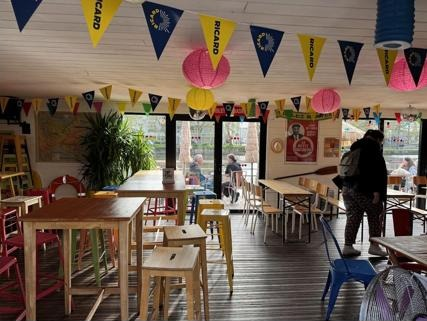
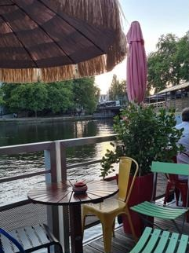

Pont inférieur
La salle vitrée, au ras de l'eau
Une salle entièrement vitrée posée sur la flottaison : les fanions au plafond, les chaises dépareillées, et le bassin qui clapote à hauteur de coude. C'est ici qu'on se replie quand le ciel nantais fait des siennes.

